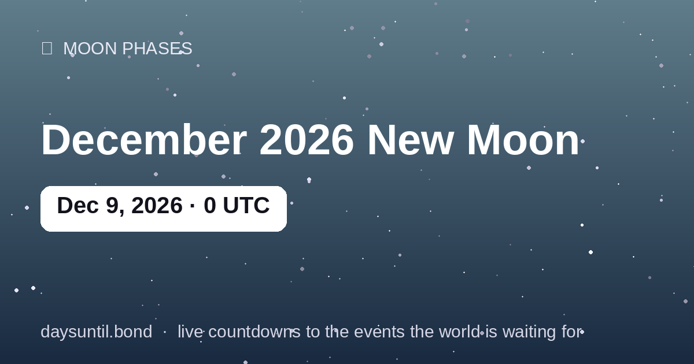

How Many Days Until December 2026 New Moon?
December 2026 New Moon falls on Wednesday, December 9, 2026.
As of November 22, 2026: 17 days to go — 2 weeks and 3 days, 13 weekdays (4 weekend days), about 408 hours.

Quick facts
| Exact (UTC) | December 09, 2026 · 00:53 |
|---|---|
| Zodiac position | 16°56' Sagittarius |
| Moon phase | New Moon (0% illumination) |
| Best viewing | Moonless night — ideal for stars, meteors and the Milky Way |
About December 2026 New Moon
The December 2026 new moon falls at 00:53 UTC on December 09, 2026, at 16°56' Sagittarius. The Moon sits between Earth and Sun, so its dark side faces us: no Moon visible for about a day on either side.
A new moon in Sagittarius is the traditional planting moment of the month — the sky's blank page. Anything begun in the days around it shares the sign's flavor, and the intentions you set now come to full light at the Sagittarius full moon six months later.
The exact new moon time in December 2026
The December 2026 new moon occurs on December 9 at 00:53 UTC. A lunar phase is a single astronomical moment, so everyone shares the same instant even though the local clock and, in some regions, the calendar date differ. In parts of the Americas it will still be the evening of December 8.
The new moon happens when the Moon is between Earth and the Sun in longitude. The illuminated half faces mostly away from Earth, which is why the Moon is difficult or impossible to see around the exact phase.
What you can and cannot see near new moon
The new moon itself is not a bright crescent in the sky. A thin waxing crescent may become visible after sunset in the evenings that follow, depending on the Moon's position, the observer's latitude, weather and the clarity of the western horizon.
The dark interval around new moon can be useful for observing faint stars and deep-sky objects because moonlight is reduced. It does not guarantee good viewing: clouds, haze, artificial light and local horizon obstructions still matter.
New moon, full moon and the phases between
A new moon begins a new synodic lunar cycle. Over the following days the visible illuminated portion grows through the waxing crescent and first quarter, reaches full moon roughly two weeks later, then wanes through the last quarter toward the next new moon.
The phase names describe the changing geometry of sunlight on the Moon as seen from Earth. They are not caused by Earth's shadow; Earth's shadow is involved in a lunar eclipse, which is a different event.
Why local dates can differ
The exact phase is one worldwide instant, but UTC midnight falls at different local times. A location west of the prime meridian may experience the December 9 00:53 UTC phase on the evening of December 8. This is a time-zone conversion, not a different lunar phase.
For that reason, this page lists the official instant in UTC and lets the live timer display the remaining time using your device's local clock.
Planning a dark-sky observing session
If your goal is to see stars rather than the Moon, choose a location away from direct street lighting, allow your eyes time to adapt to darkness and check the weather forecast. A moonless sky is only one part of good observing conditions.
If your goal is to see the young crescent, look low in the western sky shortly after sunset on the evenings after new moon. The window is brief and visibility changes with latitude and atmospheric conditions; never look at the Sun while trying to locate the Moon.
How the lunar phase time is represented
The event time is stored as a UTC timestamp and the countdown targets that exact moment. It is not a prediction of the first visible crescent, which depends on geography and observing conditions and is a separate question from the astronomical new moon.
For a broader explanation of astronomical calculations, consult the U.S. Naval Observatory data service and the NASA/JPL Horizons system.
Your December 2026 New Moon countdown milestones
It is easier to plan against fixed points than against a number that moves. These are the dates on which the countdown to December 2026 New Moon passes each marker between now and the day itself — the last one falls on Tuesday 08 December, when there will be 1 day left.
| Milestone | Day | Date | Remaining |
|---|---|---|---|
| 14 days | Wednesday | 25 November 2026 | 14 days to go |
| 7 days | Wednesday | 02 December 2026 | 7 days to go |
| 3 days | Sunday | 06 December 2026 | 3 days to go |
| 1 days | Tuesday | 08 December 2026 | 1 day to go |
How the remaining time breaks down
17 days is the headline, but it is rarely the number that helps. 13 of those are weekdays and 4 fall on a weekend, which is the split that matters if you are planning around work. It is 2 weeks and 3 days, or roughly 0.6 months, or about 408 hours.
| Unit | Until December 2026 New Moon |
|---|---|
| Days | 17 |
| Weeks | 2 weeks and 3 days |
| Months (approx) | 0.6 |
| Weekdays | 13 |
| Weekend days | 4 |
| Hours | 408 |
| Sleeps | 17 |
Working days are Monday to Friday and do not subtract public holidays, which vary by country and employer — the full month-by-month split is on our weekday page for December 2026 New Moon.